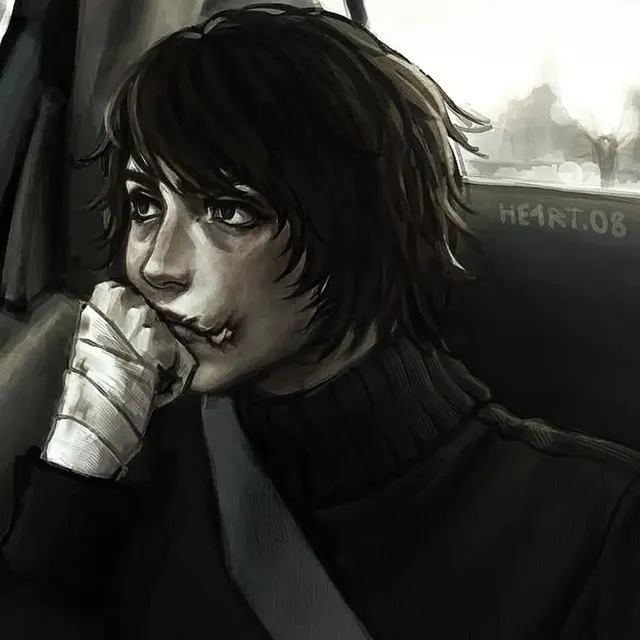
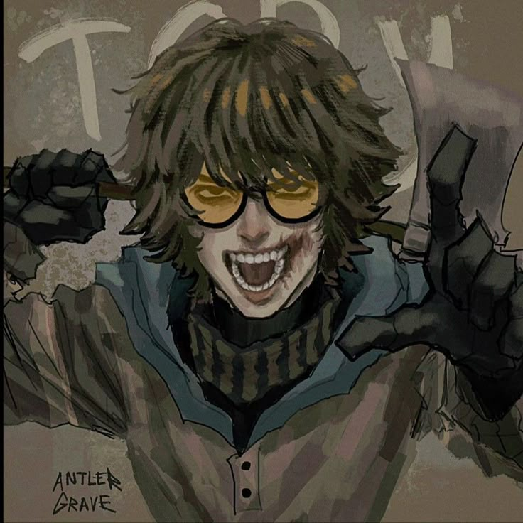
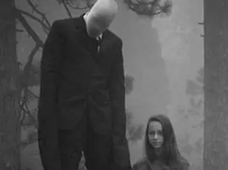
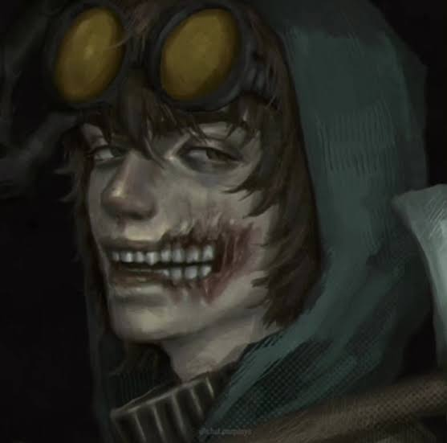
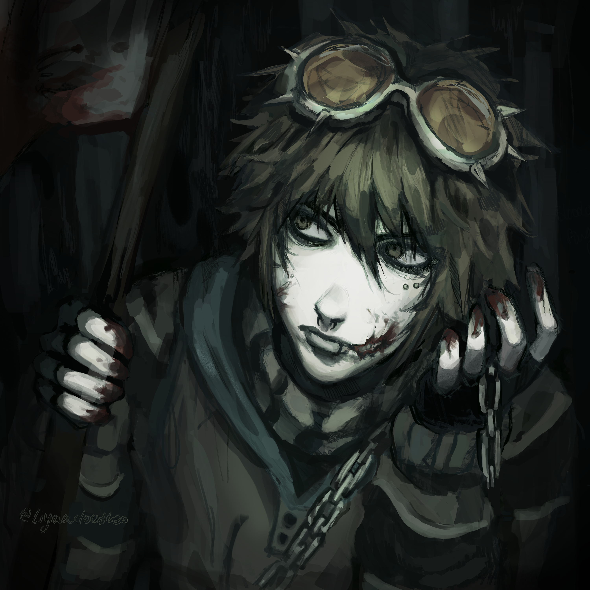

Com o braço direito enfaixado e sem sentir dor física, Toby volta para casa com a mãe atormentado pelas lembranças do acidente de Lyra.

Ao estacionar diante da pequena casa azul, Toby se revolta ao ver o carro vermelho do pai alcoólatra que sequer visitou Lyra antes de morrer.

Durante a madrugada, Toby olha pela janela do quarto e avista uma figura alta sem feições e de braços longos sob um zumbido intenso.

Consumido pela raiva e pela perda de memória, Toby rói os próprios dedos sem sentir dor até manchar as calças de sangue.
Como o distúrbio raro que impedia Toby de sentir qualquer ferimento físico moldou tanto sua sobrevivência quanto sua destruição.

Os tiques incontroláveis no pescoço que provocaram zombarias na escola e obrigaram Toby a abandonar as aulas presenciais.
O retrato de uma família feliz nas paredes do quarto antes de o pai se tornar alcoólatra e transformar o lar em um inferno.
O pesadelo perturbador no hospital em que Lyra surge ao lado da cama diante da criatura alta e das crianças de olhos negros.